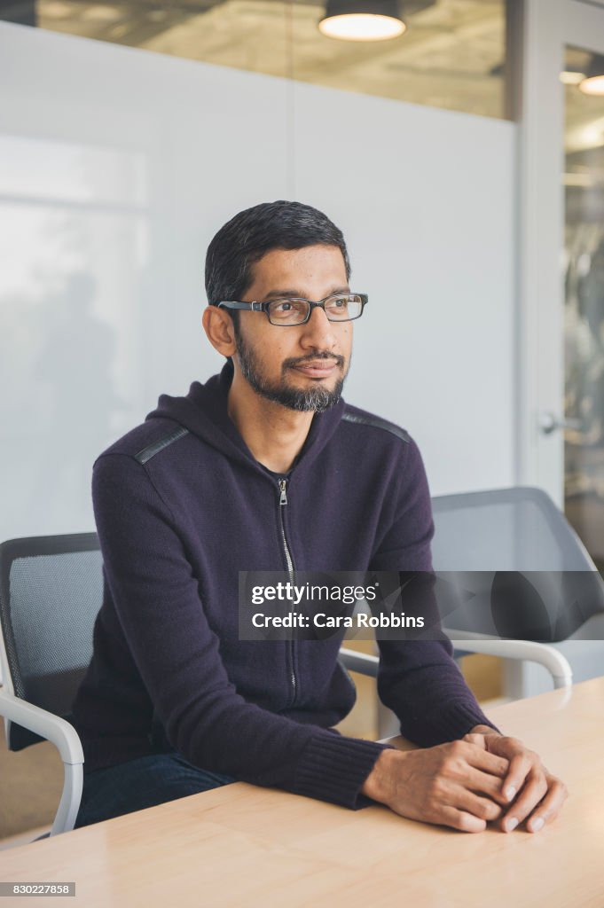
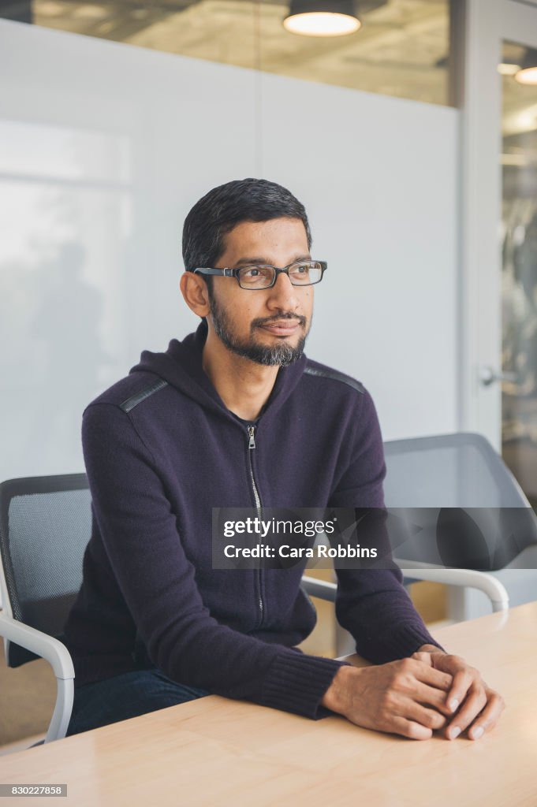

| HOME | ACHIEVEMENT | LIFE JOURNEY | GALLERY | CONTACT US |
|
 |
1. Leadership at Google CEO of Google (2015)Sundar Pichai became the CEO of Google in 2015, taking charge of one of the world’s most influential tech companies. Under his leadership, Google continued to expand its products and reach billions of users globally. Managing Google’s Core Products He successfully led major products like Google Search, YouTube, Google Maps, Gmail, and Google Ads, helping them grow in speed, quality, and accessibility.2. Major Product Innovations Success of Google ChromePichai guided the creation and launch of Google Chrome, which grew to become the world’s most widely used web browser and a key part of Google’s ecosystem. Strengthening Android He oversaw the development of Android, helping it reach billions of devices worldwide and making it the most popular mobile operating system on the planet.3. Growth to CEO of Alphabet CEO of Alphabet (2019)In 2019, he became the CEO of Alphabet, Google’s parent company. This placed him in charge of advanced technological initiatives, including AI development, cloud computing, and future projects like self-driving cars through Waymo.4. Global Recognition and Influence Respected Global LeaderSundar Pichai is regularly featured in lists of the world’s most influential people. He is admired for his calm leadership, strategic thinking, and commitment to ethical technology. Promoting Digital Growth He has supported projects aimed at expanding internet access, digital education, and responsible AI, creating a positive impact on millions around the world. |